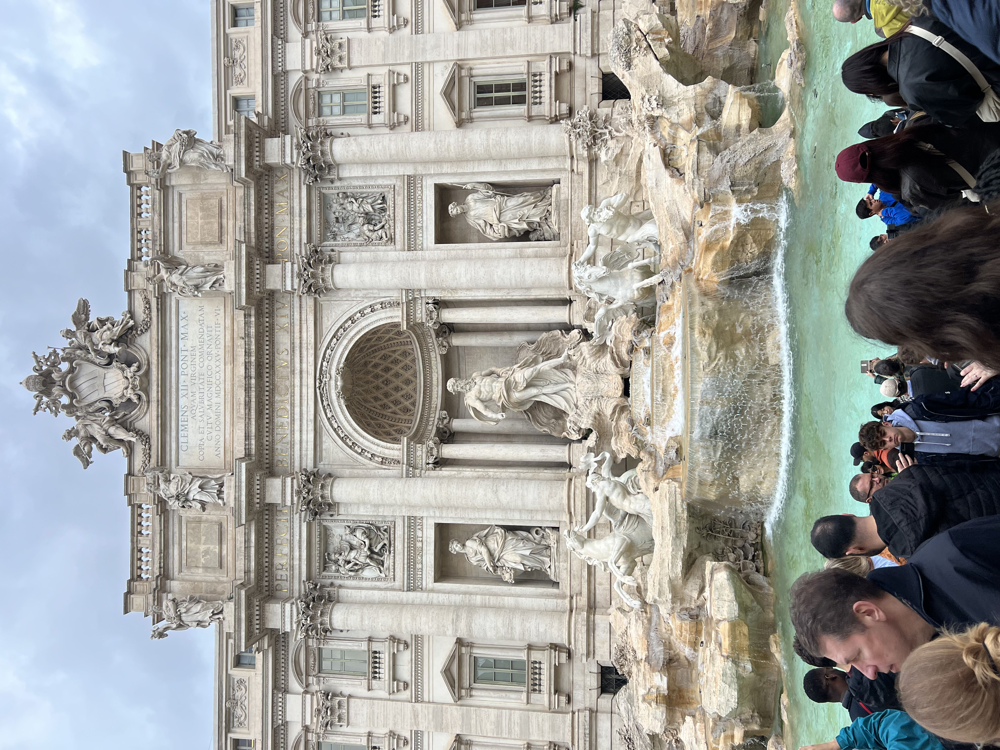
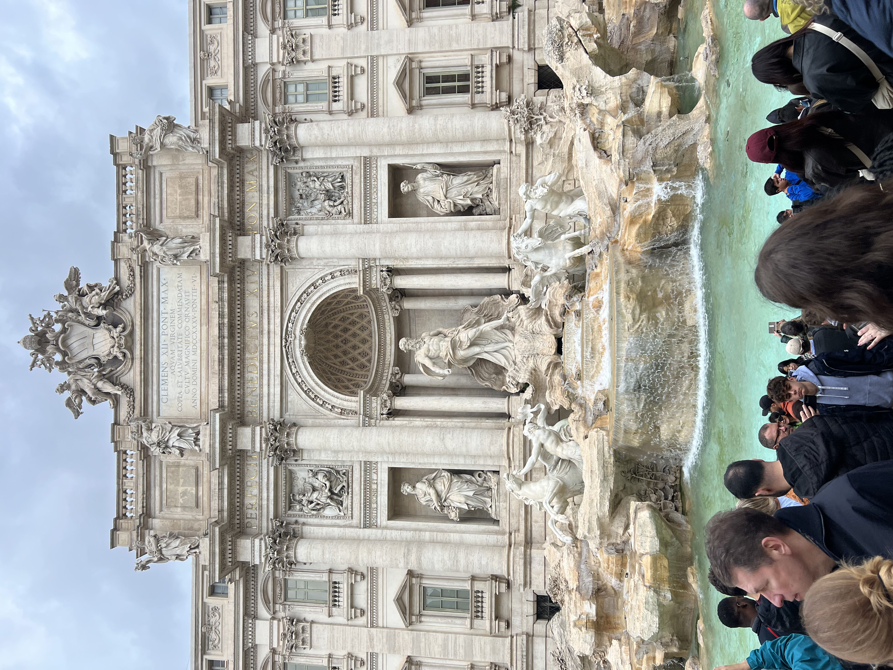

Welcome

This is the website dedicated to Cam Polikowski. Here you will find any necessary information as well as things going on in my life.
I am currently an undergraduate student studying Computer Science and minoring in Mathematics at Siena College. Much of my programming experience is in Java and Python. This is my first experience experimenting with HTML and CSS and I am enjoying it so far! In my free time, I enjoy traveling and doing things with friends. Explore my page to see pictures I have taken over time.

 
